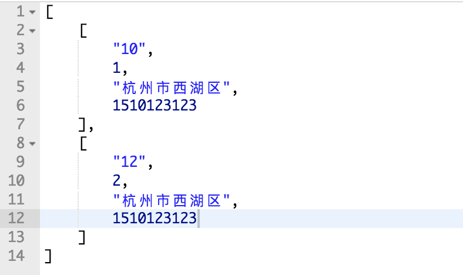
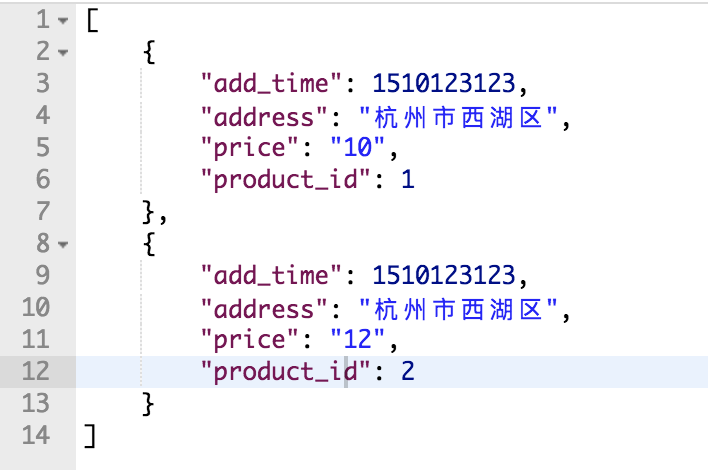

SQLAlchemy是Python最广泛使用的一个ORM(对象关系映射，简单地说就是把数据库的表即各种操作映射到Python对象上面来)工具。它支持操作PostgreSQL、MySQL、Oracle、Microsoft SQL Server、SQLite等支持SQL的数据库。 👉👉👉 文档地址
Model/数据表定义
表定义
1
2
3
4
5
6
7
8
9
10
11
12
13
14
15
16
|
class Indent(db.Model):
__tablename__ = 'x_indent'
id = db.Column(db.Integer,primary_key=True)
number = db.Column(db.String(255))
user_id = db.Column(db.Integer)
address = db.Column(db.String(255))
def __init__(self,number=None,user_id=None,address=None):
self.number = number
self.user_id = user_id
self.address = address
|
列定义
1
2
3
4
5
6
7
8
9
10
11
12
13
14
15
16
17
18
19
20
21
22
23
24
25
26
27
28
29
30
31
32
|
BigInteger
Boolean
Enum
Float
SmallInteger
Integer(unsigned=False)
Interval
Numeric
JSON
LargeBinary(length=None)
PickleType
SchemaType
String(50)
Text(length=None)
Unicode
UnicodeText
Date
DateTime
Time
TIMESTAMP
fullname = column_property(firstname + ' ' + lastname)
primary_key=True
|
查询
普通查询
1
2
3
4
5
6
7
8
9
10
11
12
13
14
15
16
17
18
19
20
21
|
query = session.query(User)
query
query.count()
query.statement
query.all()
session.query(Indent.id).distinct().all()
query.limit(2).all()
query.offset(2).all()
query.first()
query.get(2)
query.filter(Indent.id==2, address=='杭州').first().name
query.filter('id = 2').first()
query.order_by('number').all()
query(func.count('*')).all()
session.query(Indent.address)
session.query(Indent.id, Indent.number)
query2 = query.filter(Indent.id > 10)
query2.filter(or_(Indent.id == 1))
|
连表查询
1
2
3
4
5
| data = db.session.query(IndentProduct.product_id,Indent.address).\
join(Indent, Indent.id == IndentProduct.indent_id).\
filter(IndentProduct.indent_id==indentId).\
all()
print(jsonify(data))
|
在连表查询的时候如果不做处理，最后返回的不是带键值对的 dict。

列表中的项并不是标准的 Python tuple，<class 'sqlalchemy.util._collections.result'>，它是一个 AbstractKeyedTuple 对象，拥有一个 keys() 方法，这样可以很容易将其转换成 dict ：
1
2
| list = [dict(zip(result.keys(), result)) for result in data]
print(jsonify(list))
|

筛选字段
除了一开始在 query() 指定需要的字段，还可以使用 SQLAlchemy 提供的 with_eitities() 方法
1
2
3
4
5
6
| data = db.session.query(IndentProduct).\
join(Indent, Indent.id == IndentProduct.indent_id).\
filter(IndentProduct.indent_id==indentId).\
with_entities(IndentProduct.product_id,Indent.address).\
all()
print(jsonify(list))
|
==注意filter()里面的表示两个相等的是 \==，不是 \===
插入数据
1
2
3
| def insert(self, indent):
db.session.add(indent)
db.session.commit()
|
删除数据
1
2
3
4
5
6
7
8
| def delete(id):
db.session.query.filter(Indent.id==id).first()
db.session.delete(indent)
db.session.commit()
def deleteById(id):
db.session.query(Indent).filter(Indent.id == id).delete()
db.session.commit()
|
修改
1
2
3
4
5
6
| def update(self,IndentId,address):
db.session.query(Indent).\
filter(Indent.id==IndentId).\
update({Indent.address: address})
session.flush()
|
其他
1
2
| session.rollback()
session.commit()
|
借鉴